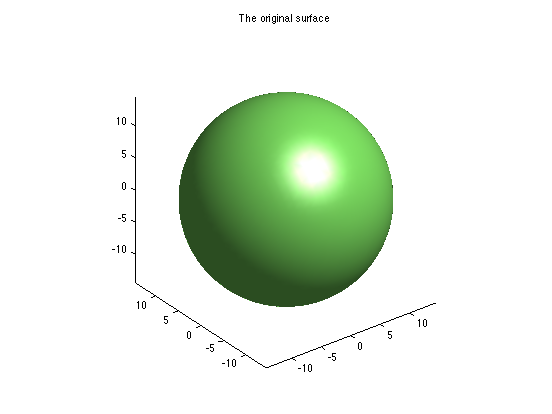
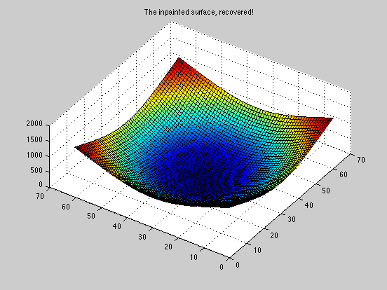

Contents
Inpaint_nans in 3-d
A spherical isosurface
n = -15:15; [x,y,z] = meshgrid(n,n,n); w = x.^2 + y.^2 + z.^2; isosurface(x,y,z,w,210) axis equal title 'The original surface'
Corrupt the data with 30% nan elements
N = numel(w); ind = unique(ceil(rand(floor(N*0.30),1)*N)); wnan = w; wnan(ind) = nan;
The corrupted data
close isosurface(x,y,z,wnan,210) axis equal title 'The corrupted isosurface'
Inpainted, using the plate method
tic,winp = inpaint_nans3(wnan,0);toc close isosurface(x,y,z,winp,210) axis equal title 'The inpainted surface, recovered!'
Elapsed time is 22.609403 seconds.
Inpainted with the springs method. It is often considerably faster, but not quite as smooth.
tic,winp1 = inpaint_nans3(wnan,1);toc close isosurface(x,y,z,winp1,210) axis equal title 'The inpainted surface, recovered!'
Elapsed time is 0.744242 seconds.
Verify that a linear function is accurately recovered
n = -10:10; [x,y,z] = meshgrid(n,n,n); w = x + y + z;
Corrupt the data with 50% nan elements
N = numel(w); ind = unique(ceil(rand(floor(N*0.50),1)*N)); wnan = w; wnan(ind) = nan;
Inpaint the NaN elements
winp = inpaint_nans3(wnan,0);
See that the inpainted elements are roughly within eps of the originals
std(w(ind) - winp(ind))
ans = 8.1455e-15
Inpainting using the thin plate method
I'll inpaint what is effectively only a 2-d array, so that we can visualize the result more easily as a surface using squeeze. Yes, inpaint_nans3 does work in 2 dimensions, but it would have been more efficient to use the original inpaint_nans. That code has more choices of methods too.
n = -30:30;
[x,y,z] = meshgrid(n,1,n);
w = x.^3 + y.^3 + z.^3;
close
surf(squeeze(w))
title 'The original surface'
Corrupt the data with 30% nan elements
N = numel(w); ind = unique(ceil(rand(floor(N*0.30),1)*N)); wnan = w; wnan(ind) = nan;
The corrupted data
close
surf(squeeze(wnan))
title 'The corrupted surface'
Now inpainted
winp = inpaint_nans3(wnan,0);
close
surf(squeeze(winp))
title 'The inpainted surface, recovered!'
Outpainting? Extrapolation using the thin plate method
Again, I'll operate on a 3-d array with a singleton dimension, so as to create what is truly a 2-d surface for purposes of visualization.
n = -30:30;
[x,y,z] = meshgrid(n,1,n);
w = x.^2 + y.^2 + z.^2;
close
surf(squeeze(w))
view(-56,64)
title 'The original surface'
Kill off anything that is outside the range: 250 <= w <= 1000.
ind = find((w>1000) | (w<250)); wnan = w; wnan(ind) = nan;
The corrupted data
close
surf(squeeze(wnan))
view(-56,64)
title 'The corrupted surface'
Inpainted
winp = inpaint_nans3(wnan,0);
close
surf(squeeze(winp))
view(-56,64)
title 'The inpainted surface, recovered!'
 Extrapolation using the springs method
See that the spring method extrapolates in a very different way from the plate method. Here it uses a roughly constant extrapolation.
winp = inpaint_nans3(wnan,1);
close
surf(squeeze(winp))
view(-56,64)
title 'The inpainted surface, recovered!'